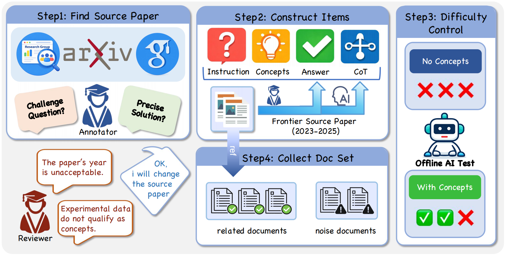

Figure 1: The DeR² building framework. It isolates document-grounded reasoning by decoupling evidence access from logic execution across four controlled regimes, enabling fine-grained error attribution.
Abstract
Despite strong performance on existing benchmarks, it remains unclear whether large language models can reason over genuinely novel scientific information. Most evaluations score end-to-end RAG pipelines, where reasoning is confounded with retrieval and toolchain choices, and the signal is further contaminated by parametric memorization and open-web volatility.
We introduce DeR², a controlled deep-research sandbox that isolates document-grounded reasoning while preserving core difficulties of deep search: multi-step synthesis, denoising, and evidence-based conclusion making. DeR² decouples evidence access from reasoning via four regimes—Instruction-only, Concepts (gold concepts without documents), Related-only (only relevant documents), and Full-set (relevant documents plus topically related distractors)—yielding interpretable regime gaps that operationalize retrieval loss vs. reasoning loss and enable fine-grained error attribution.
To prevent parametric leakage, we apply a two-phase validation that requires parametric failure without evidence while ensuring oracle-concept solvability. To ensure reproducibility, each instance provides a frozen document library (drawn from 2023–2025 theoretical papers) with expert-annotated concepts and validated rationales.
Experiments across a diverse set of state-of-the-art foundation models reveal substantial variation and significant headroom: some models exhibit mode-switch fragility, performing worse with the Full-set than with Instruction-only, while others show structural concept misuse, correctly naming concepts but failing to execute them as procedures.
Evaluation Regimes
Isolating knowledge selection, extraction, and composition
Instruction-Only
Measures Parametric Knowledge. Models must fail here three times to ensure true novelty.
Concepts-Only
Provides Oracle Concepts. Upper bound for concept-level composition and scheduling reasoning.
Related-Only
Instruction + Relevant Docs. Tests extraction and reasoning under clear evidence.
Full-Set
Related + Noise Docs. Measures knowledge selection, de-noising, and robust reasoning.
Data Construction Pipeline
Expert-driven curation for deep research reliability
Theoretical papers from 2023-2025 across Physics, Math, and IT.
PhD annotators extract (Instruction, Concepts, Answer, CoT).
Offline AI tests ensure failure without concepts and success with them.
At least one Related doc per concept + topically adjacent Noise docs.
*Each annotated question was rewarded at 2500 RMB to attract top-tier researchers.
Dataset Distribution
Structural and contextual complexity of the DeR² benchmark [cite: 11, 49]
Model Performance Leaderboard
| Model | Instruction-Only | Full-Set | Related-Only | Concepts-Only | RLoss |
|---|---|---|---|---|---|
| OpenAI-GPT-5.2-high | 65.8 | 71.1 | 71.4 | 83.8 | 12.7 |
| Gemini-3-Pro-Preview | 64.2 | 53.7 | 68.3 | 80.9 | 27.2 |
| OpenAI-GPT-5.1-high | 59.8 | 57.0 | 66.9 | 81.4 | 24.4 |
| DeepSeek-V3.2-Thinking | 57.6 | 49.3 | 61.3 | 75.3 | 26.0 |
| Claude-Opus-4.1-thinking | 49.3 | 40.0 | 52.0 | 72.4 | 32.4 |
| Average Score | 55.9 | 51.2 | 62.9 | 75.4 | 24.2 |
Note: RLoss (Retrieval Loss) = Score(Concepts) - Score(Full-Set).
Core Failure Modes
- Reasoning Mode Switching: Models abandon viable parametric paths but fail to anchor new evidence-driven chains, leading to Score(Instr) > Score(FullSet).
- Structural Retrieval Errors: Models recognize definitions but fail to execute constructive mechanisms (e.g., algorithmic steps).
- Concept Coordination Breakdown: Poor scheduling of extracted concepts even when they are present.
Regime Analysis
The sandbox enables fine-grained diagnosis of three recurring gaps:
- 1. Knowledge Loss: Concepts vs. Instruction
- 2. Retrieval Loss: Related vs. Concepts
- 3. Noise-Induced Loss: Full-set vs. Related
Citation
@article{der2_sandbox2026,
title={Retrieval-Infused Reasoning Sandbox: A Benchmark for Decoupling Retrieval and Reasoning Capabilities},
author={ByteDance Seed and M-A-P Team},
year={2026},
url={https://github.com/Retrieval-Infused-Reasoning-Sandbox}
}